Поездка на других ресурсах: komoot.
Рассказ
Серёга с батей решили повторить прошлогодние приключения на Алтае и снова собрались провести в тех местах новогодние каникулы. Я до последнего не знал, получится и стоит ли идти с ними или нет, но в итоге решился, купил билеты на самолёт, хоть и вдвое дороже их первоначальной стоимости, и начал запасаться снаряжением. Собственно, докупить надо было только кое-что из обуви и одежды, т.к. планировалось рассчитывать на выживание при температуре до -50 C°, а в этом случае стоит иметь запас качественных слоёв с низкой теплопроводностью.

2-го января, прилетев утром в Горно-Алтайск, мы сразу встретили нашего водителя, загрузились и отправились в дорогу. Расстояние, казалось бы небольшое (~420 км), но из-за частых серпантинов и поворотов, а также перерыва на обед, в дороге пришлось провести больше 5 часов. На место — в район турбазы Куйактанар на Чуйском тракте — приехали уже близко к закату, разложили лыжи, перепаковали рюкзаки, переоделись потеплее и отправились искать место первой ночёвки.

Где-то через полчаса встали около пустых жилых домов, которые в тёплый период принимают гостей. Серёга занялся палаткой и раскладушками, а мы с Сергеем Иванычем пошли искать деревья для дров и оснований раскладушек. Это была, пожалуй, самая холодная ночь — -23 C° — хотя нас такая температура не заботила, даже наоборот стало немного жалко, что тёплая и сложная экипировка так и не сыграла своей роли.
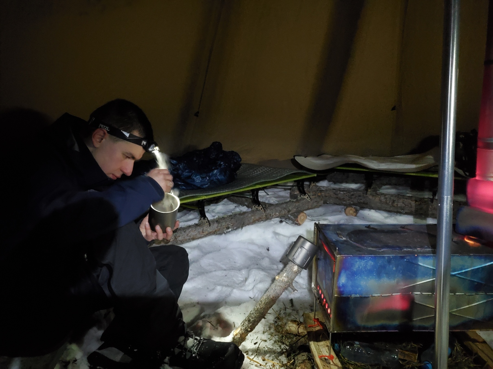


Утром глянули карту и пошли дальше по маршруту — удаляться от тракта в сторону гор. Весь второй и третий день мы будем почти всё время подниматься вверх. Тут мы сразу ощутили решающее значение камусов. Я до этого похода не знал, что это такое, но на всякий случай по совету Серёги купил их. Оказалось, с ними можно тащить и рюкзак (18 кг) и сани (25—30 кг) в уклон до 30 градусов. В общем, всю дорогу в горку с санями шлось довольно комфортно.


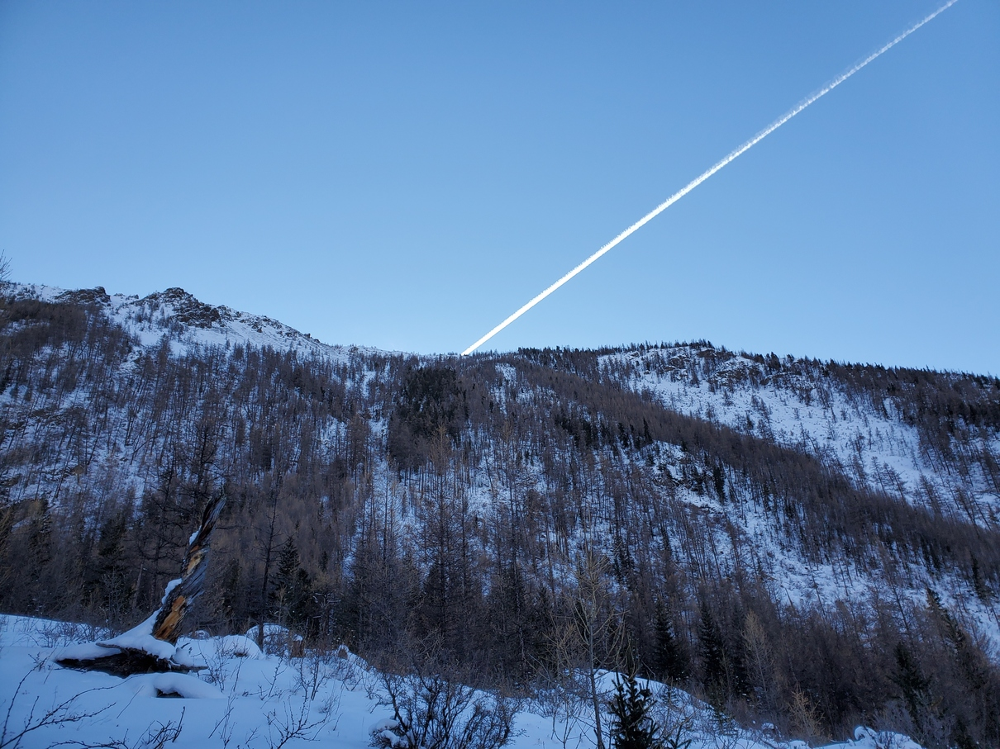

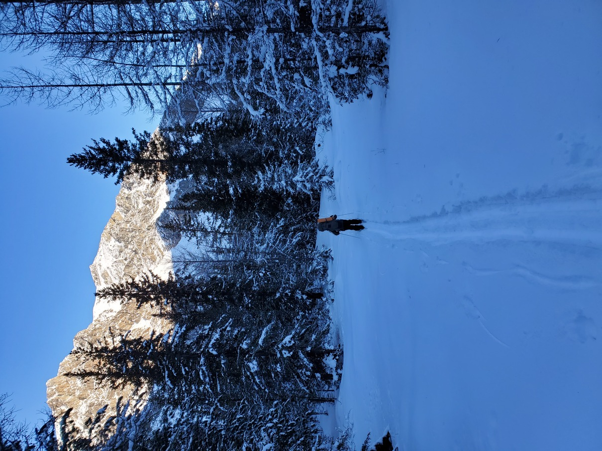

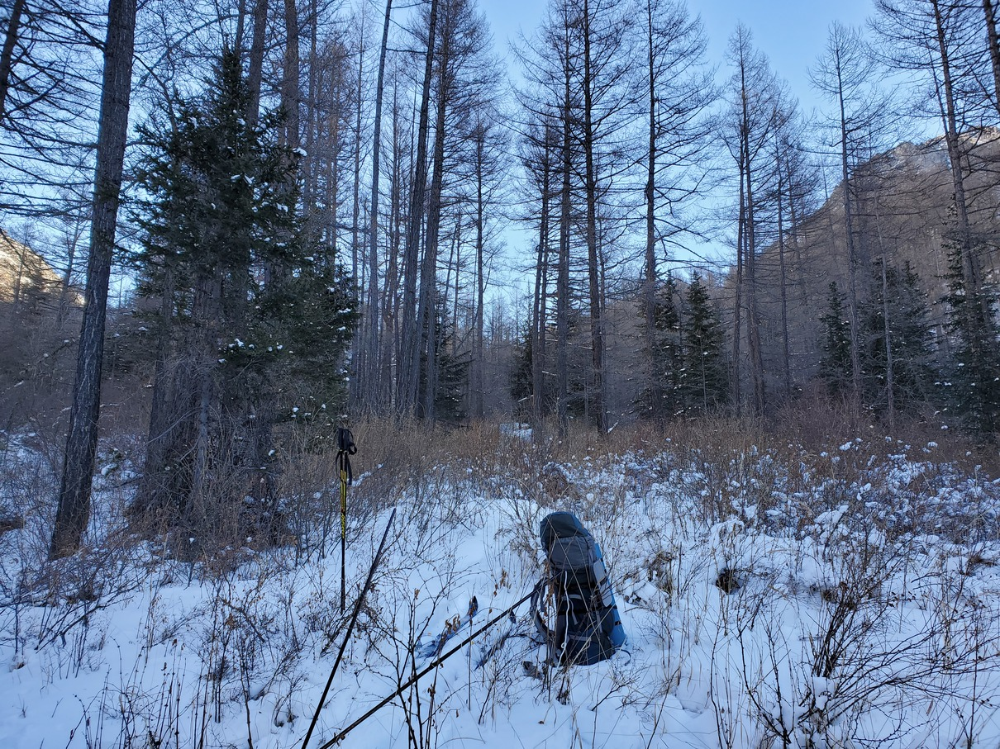


Изначально мы планировали идти по протоптанной животными тропе, но вскоре потеряли её и пошли по усеянному мелкими кустарниками склону: двое шли впереди и тропили дорогу, а я — за ними. В итоге уперлись в густые заросли и морены, прямо перед которыми Серёга потерял один из камусов (у него были короткие, крепящиеся через прорези в лыже, в итоге при ходьбе они не на виду). Так и не найдя его, осмотревшись, мы решили перейти через камни на правую сторону подъёма, чтобы идти дальше. Переходить по камням было довольно стрёмно и я даже никак не мог решить, идти ли на лыжах или пешком. Но рельеф всё-таки был такой, что я выбрал второй вариант. Опасность, собственно, в том, чтоб под снегом совершенно не видно ни наличие камней, ни их форма. В итоге палки при втыкании их в снеговой холмик могут встать крепко, могут провалиться в куст, могут попасть на скос камня и соскочить в расщелину глубиной до пары метров. Как Серёга умудрился перенести на спине по этой части почти 30-ти килограммовые сани и всё их содержимое, для меня осталось загадкой.


Перебравшись, мы перекусили и стали подниматься в крутую горку. Причём горка была настолько крутая, что на одном из поворотов при подъёме траверсом я упёрся санями и их дугами и отстегнул их, чтобы поднять рюкзак и сани отдельно в 2 ходки. Где-то там же ещё и упал (падений вообще было немало на всём маршруте), погнул лыжную палку, изрядно выругался и пошёл дальше. :)


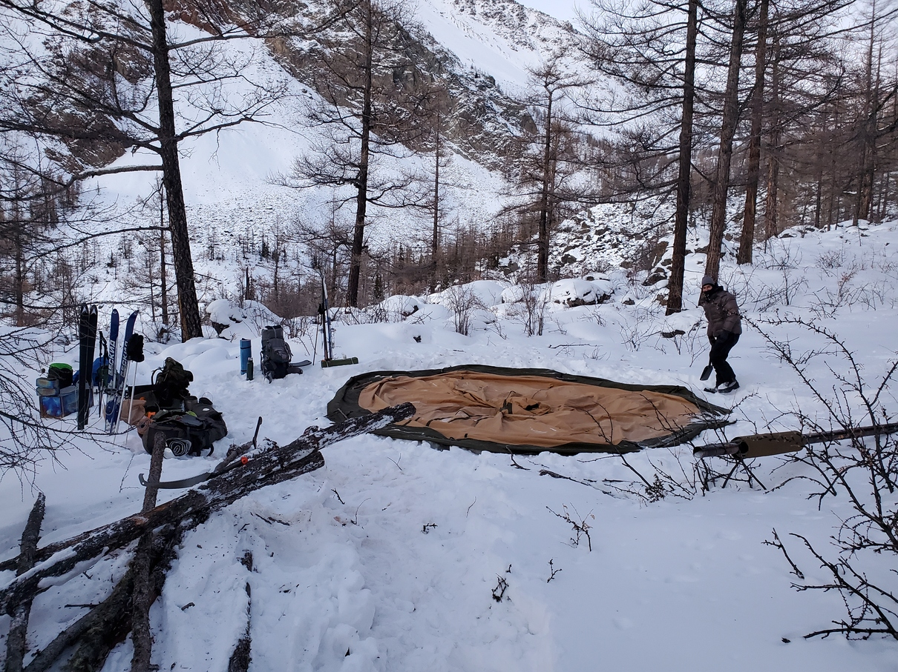
Кстати, про перекусы: у нас были запланированы 3—4 приёма пищи, не считая полноценных завтрака и ужина: орехи, шоколад, бутерброды с маслом и сыром (в виде сэндвичей), сало, сыровяленая колбаса. Отмечу, что на таком морозе проблемно есть почти всё, из жидкостей у нас не замерзал только спирт, который Сергей Иваныч активно использовал для лечения, расслабления и всех прочих целей, а я берёг для дезинфекции и на самый крайний случай. :) Почти вся перечисленная еда была мало отличима по твёрдости от камня, теряя также часть вкусовых качеств. Если бутерброды ещё можно было кусать и жевать, то с колбасой было совсем печально. Я сначала ленился и резал её на 3 большие порции, но жевать или откусывать их оказывалось совсем нереально. Потом уже резал каждую порцию на мелкие части.
На следующий день мы пошли в сторону Куектанарских озёр, в конце которых в итоге и встали. Шли почему-то по сложному рельефу горы, а не по озеру, возможно, Серёга хотел пройти дальше и встать ближе к перевалу. По пути было несколько сложных крутых подъёмов, где пришлось изрядно попотеть. Двое других сильно оторвались от меня, и обнаружились уже на озере, когда я спускался. Спуски тогда стали круче, и на одном из них я резко наехал лыжей на камень, порвав один камус. Лыжи у меня и с камусами уже начали сильно скользить, так что оставшийся спуск решил пройти уже пешком. Кстати, всю дорогу я напевал чуть изменённую песню Высоцкого «Парус»: «Камус, порвали камус! Каюсь, каюсь, каюсь!» В итоге так и получилось, не выдержала резинка натяжителя на мыске. Хорошо, что это произошло перед местом, где мы решили провести 2 днёвки (маршрут уже на второй день решили сильно сократить из-за более тяжёлого рельефа, чем планировалось).
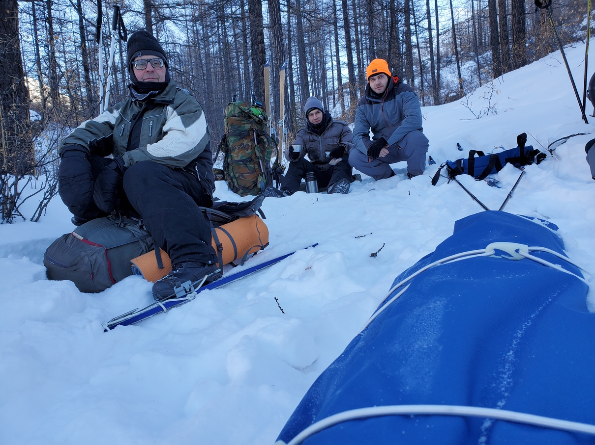


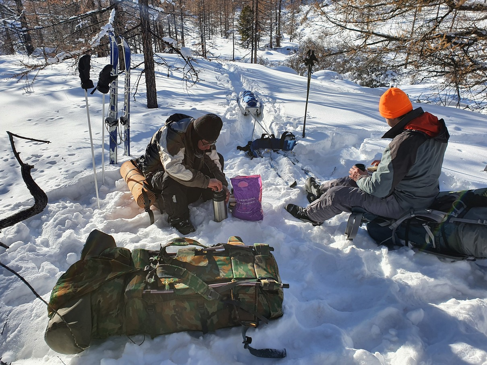
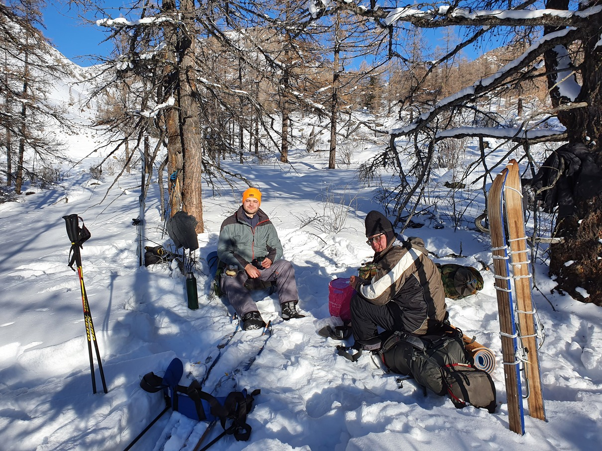
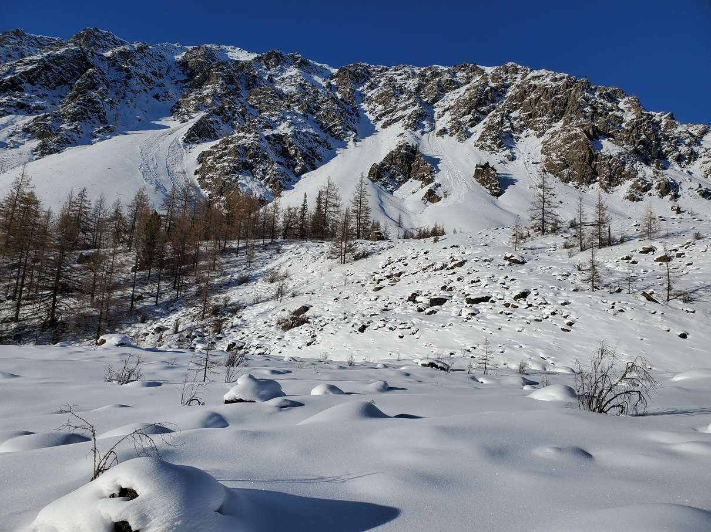


В тот вечер приключения не кончились: встали мы довольно поздно, солнце уже зашло, начало стремительно темнеть. Сергей, как обычно, занялся палаткой, мы — дровами. Дрова было видно уже плохо, кроме того, весь лес был выше нашего уровня (т.к. мы стояли всего чуть выше поверхности озера), а сугробы там были больше метра глубиной. В общем, ходить и искать было тем ещё удовольствием. Уже ночью мы с Сергеем Иванычем стали распиливать полуповаленное дерево, но оно в итоге оказалось сильно отсыревшим, отчего вода в печном котле не закипала до начала 5 часов утра. Я тогда уже чуток переохладился и стал подмерзать. Но в итоге мы смогли поесть и согреться, а в следующие дни с дровами проблем уже не было.
К полудню следующего дня полегчало, Сергей пошёл подниматься и тропить дорогу к перевалу, а мы занялись дровами. К вечеру мы принялись латать инвентарь: я починил камус парой сшитых в кольца отрезков нейлоновой стропы, любезно предоставленной Сергеем Иванычем. В итоге стало даже надёжнее, чем было.


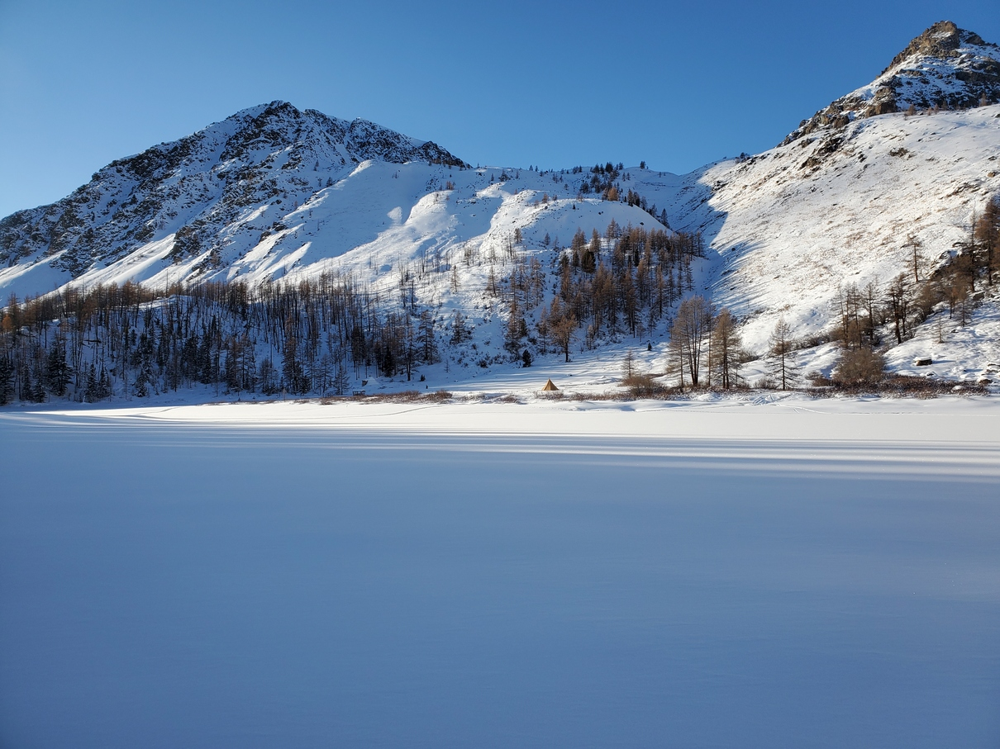


Немного про палаточный быт: хоть палатка и большая, находиться в ней втроём оказалось впритык, если расставлять спальные места по периметру. Места хватило на 2 Серёгины раскладушки, мой лежак с двумя пенками на снегу, место следящего за костром и дровяник. Ещё была небольшая пенка под вещами, на которой также можно было сидеть, т.к. на раскладушках сидеть было крайне нежелательно. Вообще, я так и не понял их целевое предназначение: площадь ножек крайне мала, ножек много и они требуют под собой ровной поверхности, в любой грунт будут проваливаться под давлением. Сергей их немного модифицировал, заказав из фанеры накладки с углублениями под продольные брёвна. В итоге на каждую раскладушку требовалось найти и напилить около 6 метров ровных стволов, сделать пропилы в нужных местах, разместить всё это на снегу. Как по мне, то это слишком напряжно и несоразмерно комфорту, если только не стоять на одном месте несколько дней подряд. Благо, что мы шли назад тем же путём и переиспользовали заготовленные ранее брёвна для лежаков. У меня это пока был самый холодный поход из всех, но за счёт печки в большой палатке спалось намного комфортнее, чем в прошлых походах, когда температура была -12..-7 градусов, лицо подмёрзло только один раз за все дни, снизу холод вообще почти не чувствовался. Под куполом палатки Сергей вешал свои треккинговые палки, к которым мы прищепками крепили всё, что хоть немного набирало влагу. Там порой была температура выше +20 C°. Инея в палатке почти не было, обычно небольшой его слой заканчивался на уровне около 30 см от уровня снега.


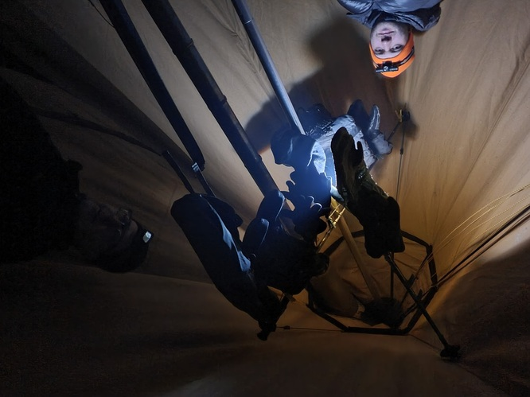


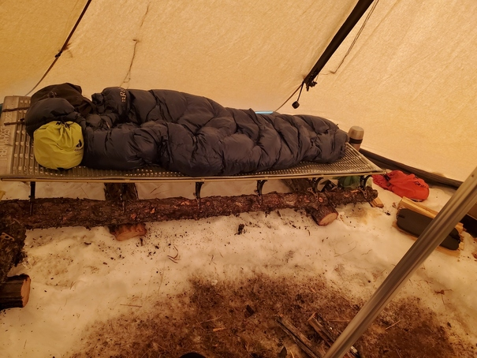

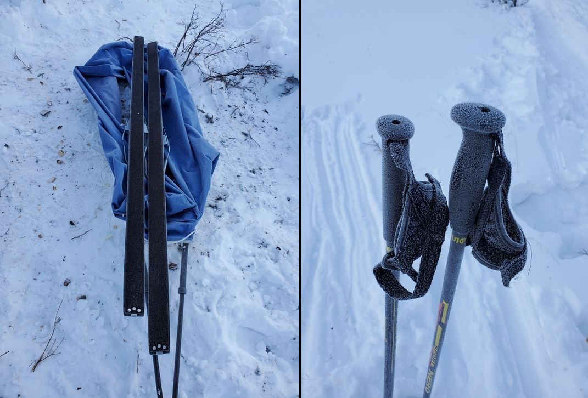
Во вторую днёвку мы с Сергеем Иванычем решили сходить по следам Серёги на перевал и хоть краем глаза увидеть долину между двумя грядами гор. Подниматься было довольно сложно, где-то — лесенкой. Уже выйдя из леса, мы встретили возвращающегося обратно Серёгу, успевшего пофоткать местные ландшафты, а сами пошли в краю седловины. Там тоже поснимали, перевели дух, Сергей Иваныч увидел на соседнем пригорке что-то типа стаи волков, остановившихся посмотреть на него и пошедших дальше. И двинулись обратно. Но даже не дойдя до леса я понял, что эти камусы совсем меня не тормозят. Упав несколько раз, решил все крутые спуски идти лесенкой. Идти пешком бы не получилось, т.к. в большинстве мест нога в снег проваливалась, причём проваливалась минимум по колено. Сергей Иваныч ещё в начале спуска сказал мне, что Серёга спокойно спускался вообще без камусов и верёвочных зацепов, и всю оставшуюся дорогу назад я думал, что выскажу ему на это и как буду боготворить Серёгу, если он действительно спустился на лыжах без тормозов. :) Спуск заканчивать пришлось уже после заката, и я тогда подумал, что был дураком, выложив фонарик из рюкзака, идя в эту радиалку. Но в конце концов, дошёл.


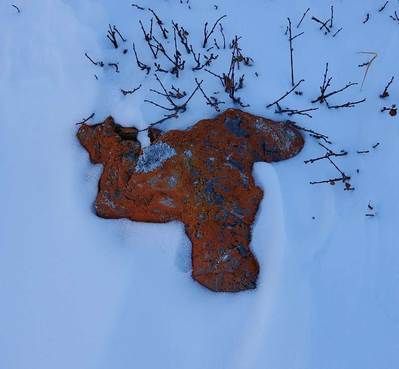
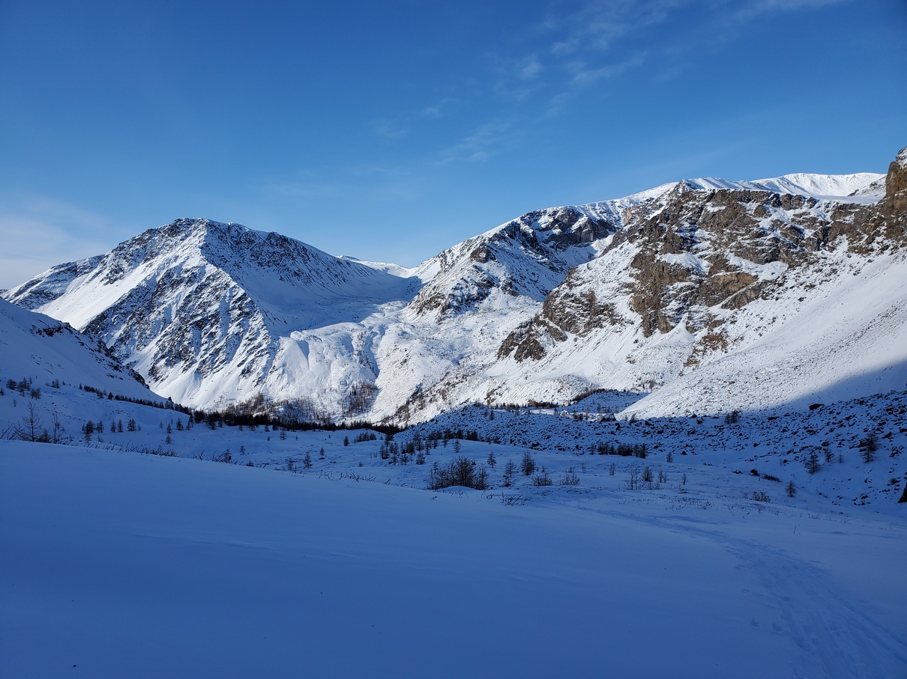


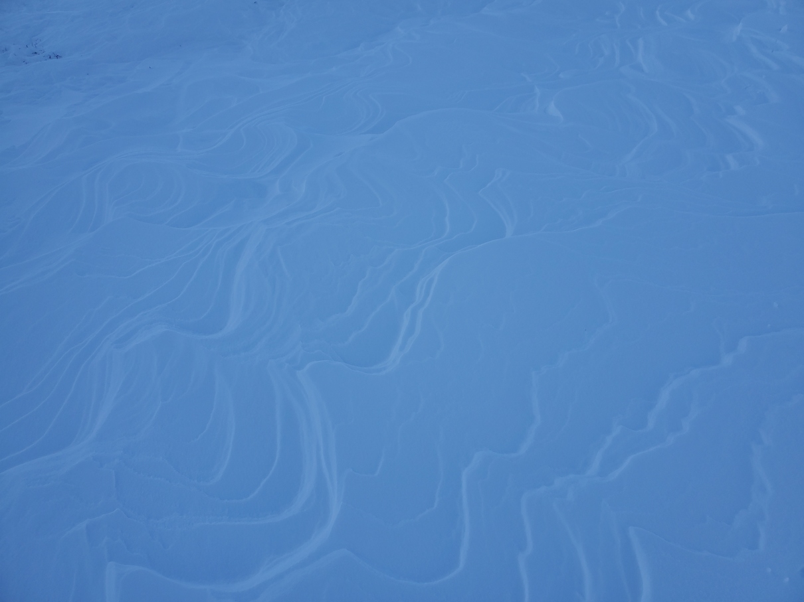


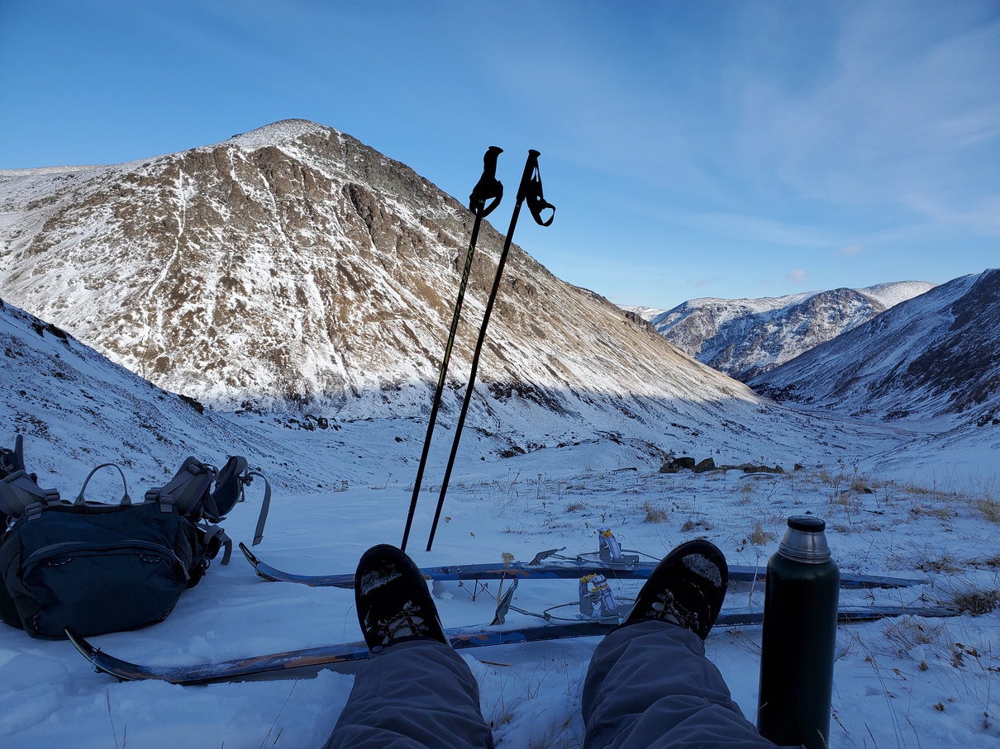

Возвращаюсь такой с горы в лагерь и говорю: «Джентльмены, у меня для вас две новости: хорошая и плохая. Хорошая в том, что камус-таки работает. Плохая же — что он, собака, работает только в одну сторону!» Джентльмены ухмыльнулись, Серёга подтвердил, что шёл всё-таки на тормозах, и я понял, что без таких же тормозов физически назад вернуться не смогу. Тогда вечером Сергей Иваныч предложил мне ещё остаток нейлонового каната (~10 мм), который Серёга показал как связать в кольцо самозатягивающимся узлом (grapevine knot, двойной рыбацкий). Надев два таких кольца на лыжи, обратно шлось уже сильно увереннее (хотя и не так просто, как в горку, как ни странно).


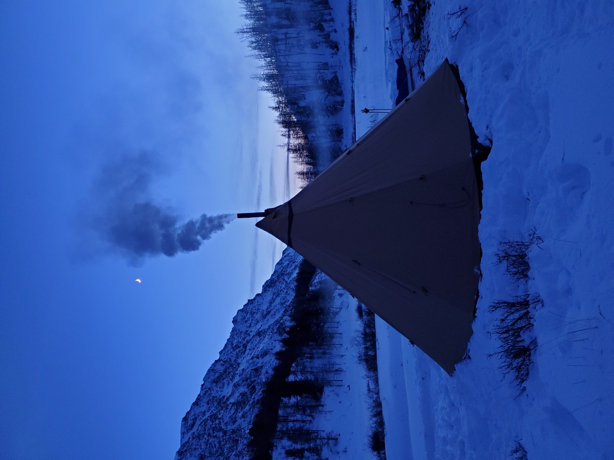
Возвращаться мы решили уже по озёрам, где идти было неисоизмеримо легче, чем по горе. Вышли к старой лыжне, идущей через морены, в конце которой были какие-то странные следы от ботинок. Я сначала подумал, что это Серёга ходил на разведку 3 дня назад, но потом рядом с ними разглядели следы копыт и сделали вывод, что за нами всё дорогу шёл какой-то конный всадник. Видимо, пожалев лошадь, он развернулся у морены и пошёл обратно. Следы его шли прям до места нашего старта. В два последних дня сани уже тащил Серёга, и я удивился, как он с ними так легко шёл с учётом всех крутых спусков и поворотов. Часто не получалось его догнать.


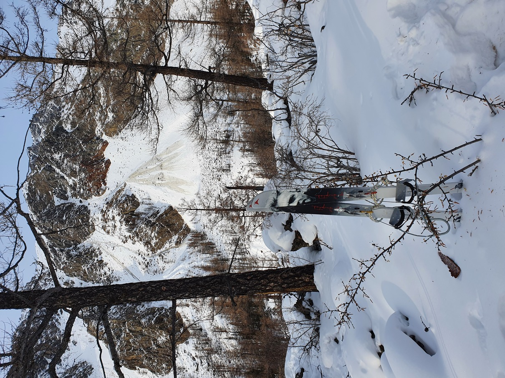
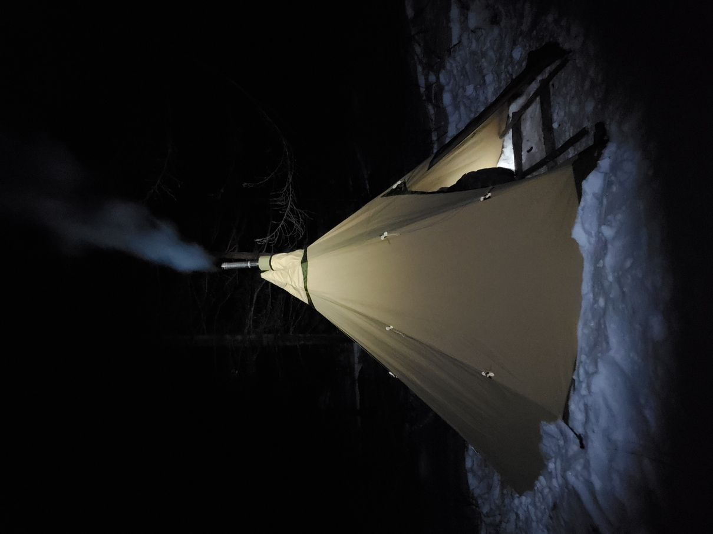
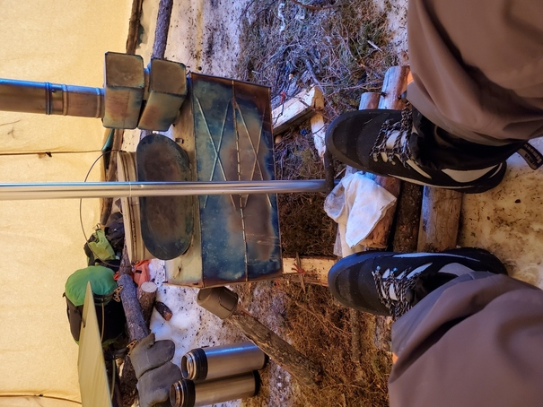


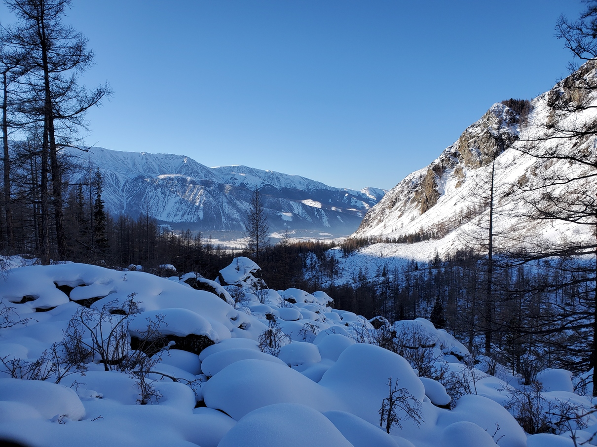
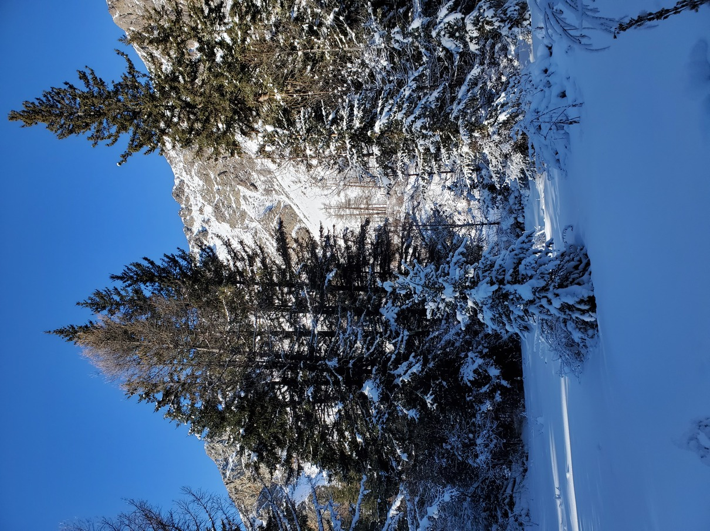


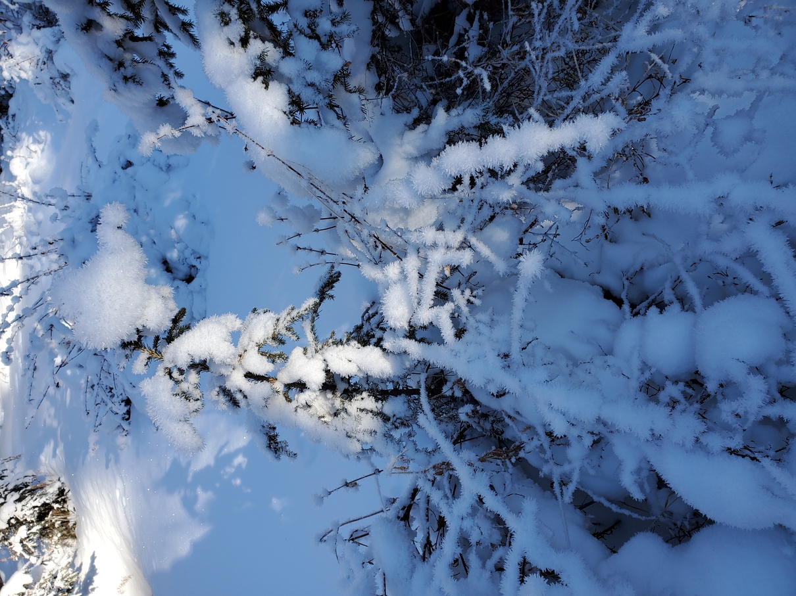


Выйдя к Чуйскому тракту, мы дождались водителя и по пути к гостинице решили отдать ему все сигнальные патроны, которые он купил и передал нам в начале маршрута, потому что они так и не понадобились.
Снаряга
Моё:
-
ботики Hanwag Abisko GTX
-
лыжи «НЛФ», палки обычные, не телескопические
-
камусы Asnes Colltex 60X2100 Mix Endhook
-
коврики: обычный из «Декатлона» и гармошка Splav Flex Track (без алюминиевого напыления)
-
термобельё (без утепления), 2 флисовые кофты пуховая жилетка Quechua и пуховая куртка Splav Loretan (стоянки); лёгкая мембранная куртка (ходьба); горнолыжные брюки «Снаряжение», флисовые и термокальсоны (стоянки); балаклава
-
треккинговые носки разной толщины
-
чуни Splav «Aleut»
-
4 пары тонких флисовых перчаток, толстые перчатки с ветрозащитой, тёплые варежки Sivera «Алеут» (практически, не использовались), 2 пары строительных рукавиц (тонкие и брезентовые)
-
спальник Splav Adventure Comfort (-1..-7 C°)
-
прозрачные очки от ветра (не понадобились)
Серёга:
-
ботинки те же
-
лыжи Asnes Ingstad BC Waxless
-
2 раскладушки Therm-a-Rest Luxurylite Ultralite Cot
-
коврик Therm-a-Rest Ridgerest Solite Large
-
спутниковый телефон
-
сани Savotta Paljakka Ahkio
-
палатка Tentipi Safir 9
-
екатеринбургская титановая печь с отделением под котлы + 2 титановых котла для неё
|
Note
|
Всё оригинальное содержимое этой страницы доступно без каких-либо ограничений как
относящееся к общественному достоянию. |